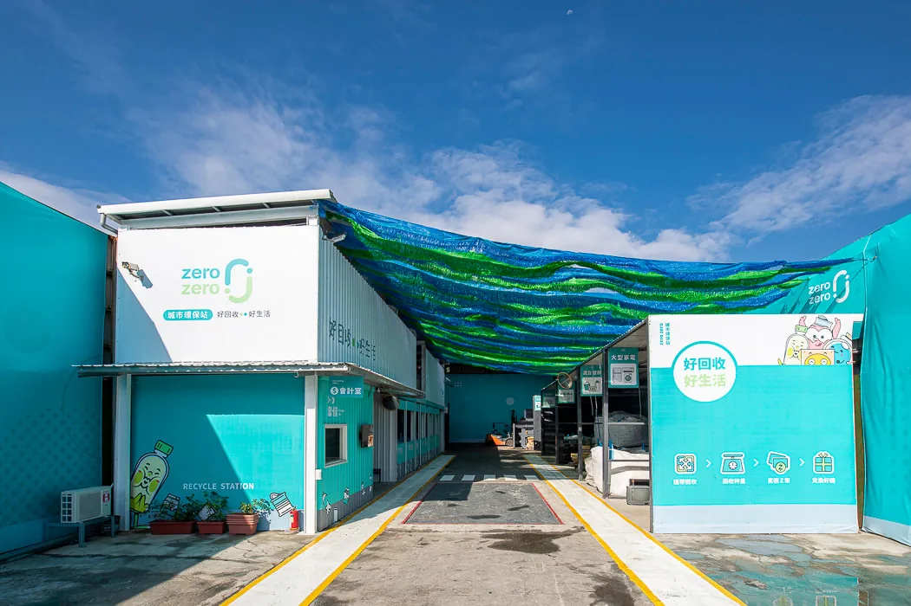
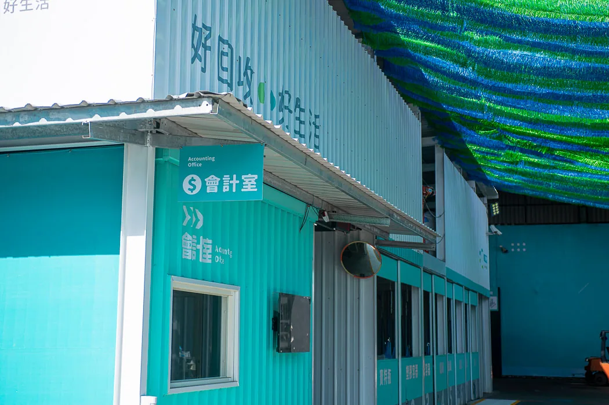
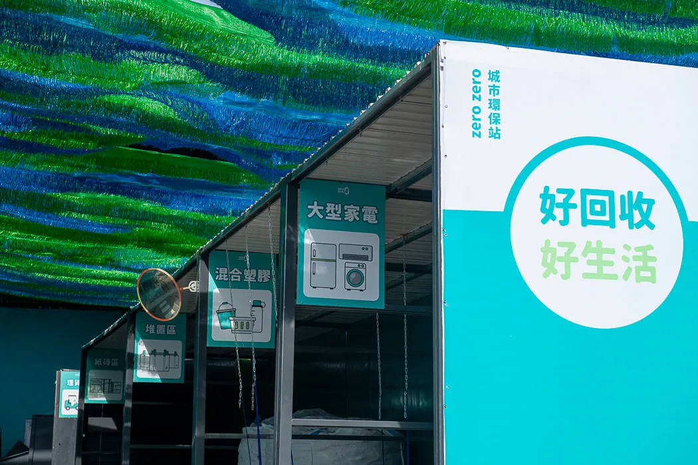
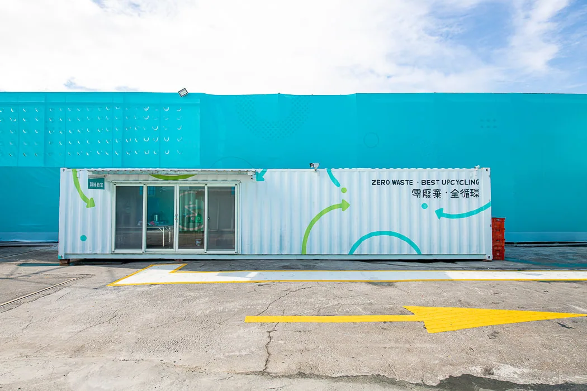
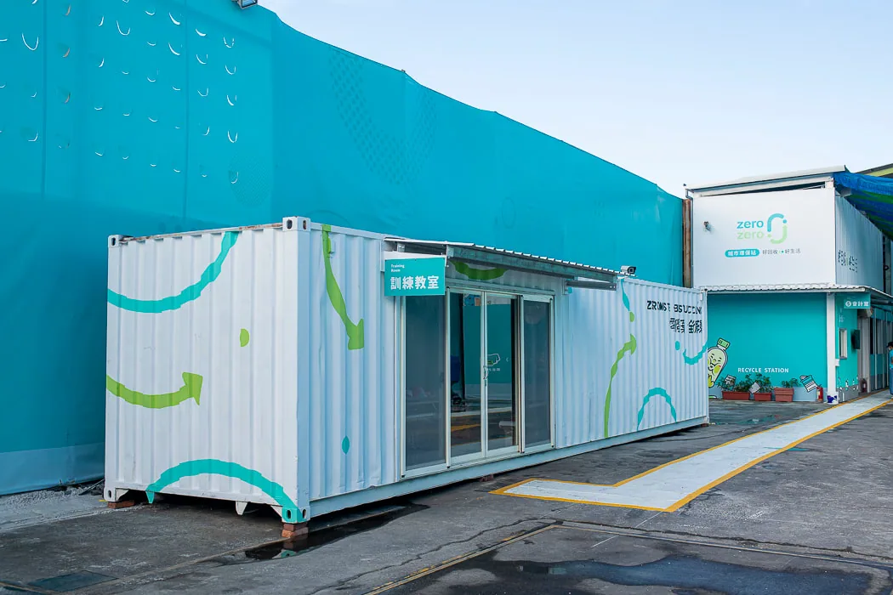

平面設計 ／ 展場設計
zero zero城市環保站(彰化金馬站)
Design for DaFon
透過整體環境更新，包括場域色彩計畫、內外牆展示圖樣、多元服務空間，來重新定義讓回收站品牌模組化，打破大家對回收站既有的骯髒臨亂的既定印象。
Before 場域舊有樣貌


After 建站工程及視覺規劃更新後









↑ 將危險不易靠近的儲格，設計成便於大家投遞回收物的窗口




平面設計 ／ 展場設計
Design for DaFon
透過整體環境更新，包括場域色彩計畫、內外牆展示圖樣、多元服務空間，來重新定義讓回收站品牌模組化，打破大家對回收站既有的骯髒臨亂的既定印象。



↑ 將危險不易靠近的儲格，設計成便於大家投遞回收物的窗口

